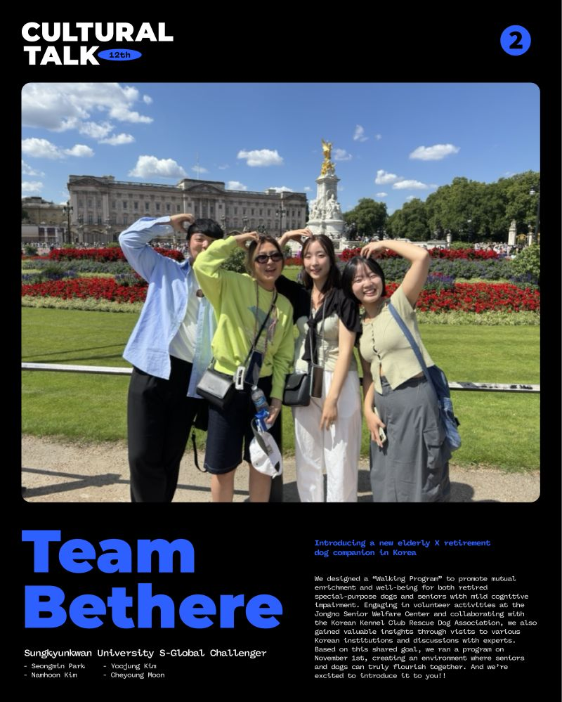
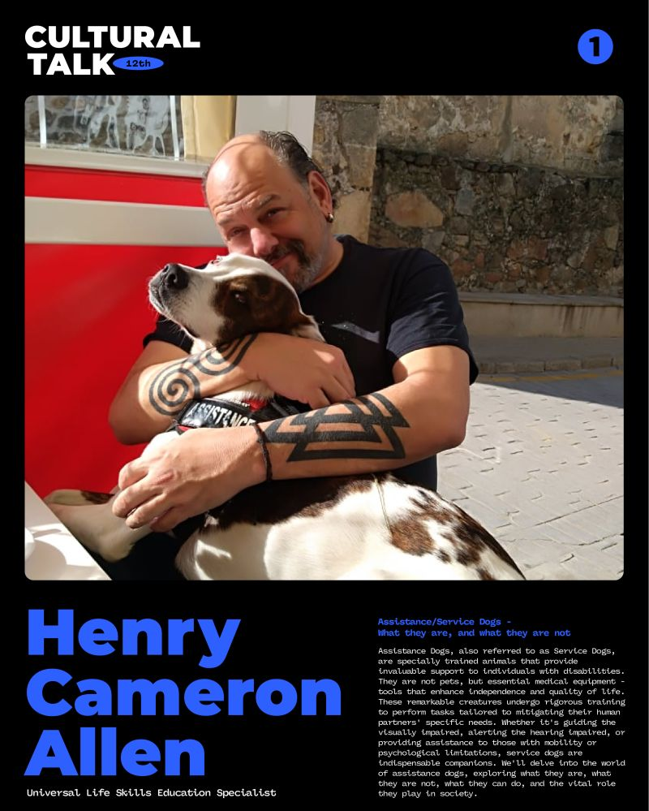

12th Cultural Talk For Diversity
Theme: The Healing Connection Between Humans & Dogs

Event Details
Date: 30 November, 2024
Time: 20:00 (KST) / 19:00 (MYT) / 18:00 (WIB) / 16:30 (IST) / 12:00 (CET)
This event has already taken place and is now part of our archive.
Conference Overview
This session explored the healing connection between humans and dogs from both social and practical perspectives. It brought together community-based innovation and educational advocacy to show how dogs can support dignity, wellbeing, and more connected forms of care.

Team Bethere
Sungkyunkwan University S-Global Challenger team
Team Bethere is a student team from Sungkyunkwan University’s S-Global Challenger program, including Seongmin Park, Namhoon Kim, Yoojung Kim, and Cheyoung Moon. Their project focused on creating mutual wellbeing for older adults and retired special-purpose dogs in Korea.
Topic: Introducing a New Elderly × Retired Dog Companion Program in Korea
The team presented a walking program designed to enrich the lives of both seniors with mild cognitive impairment and retired working dogs. Their talk highlighted field visits, partnerships, and the promise of intergenerational and interspecies companionship.

Henry-Cameron Allen
Universal Life Skills Education Specialist
Henry-Cameron Allen is an educator and mentor whose work emphasizes practical life skills and inclusive learning. He often connects broad social understanding with accessible public education.
Topic: Assistance/Service Dogs — What They Are, and What They Are Not
This talk clarified the role of assistance and service dogs as highly trained working partners rather than pets. It explained what service dogs do, what limits and misconceptions exist, and why public understanding matters for access and dignity.
Archive Notes
- Poster text identifies the second speaker image as “32th,” which appears to be a design typo; page normalized to 12th conference context.
Related Coverage
You can explore additional posts and news coverage related to this conference below.